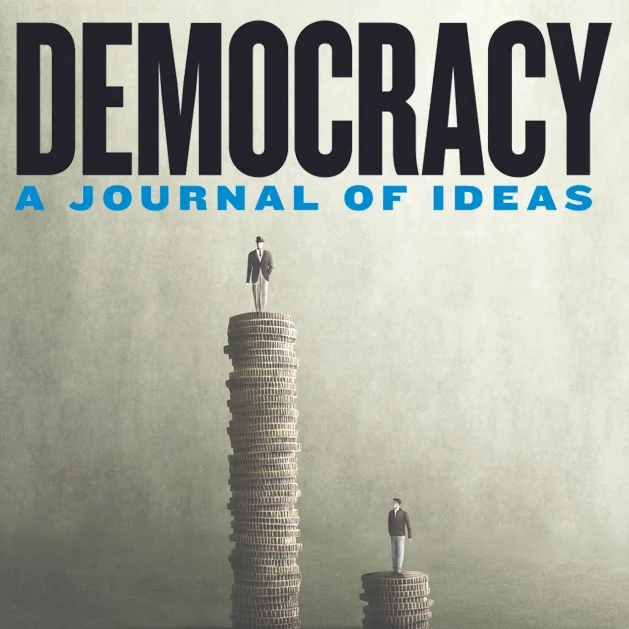
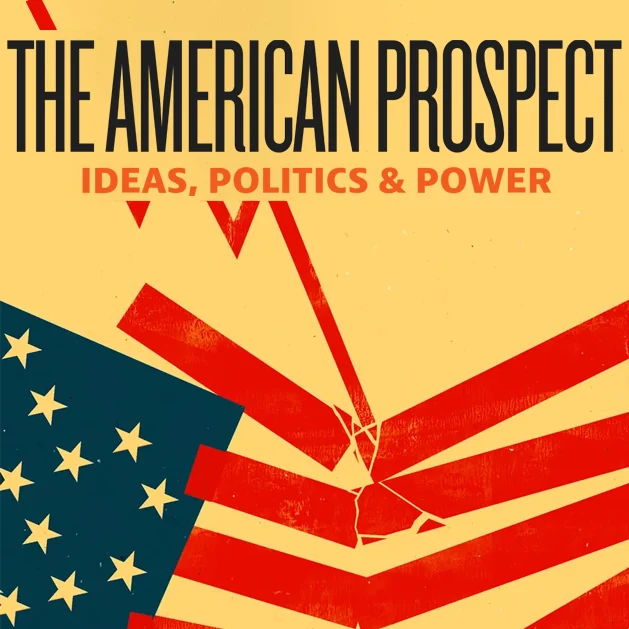
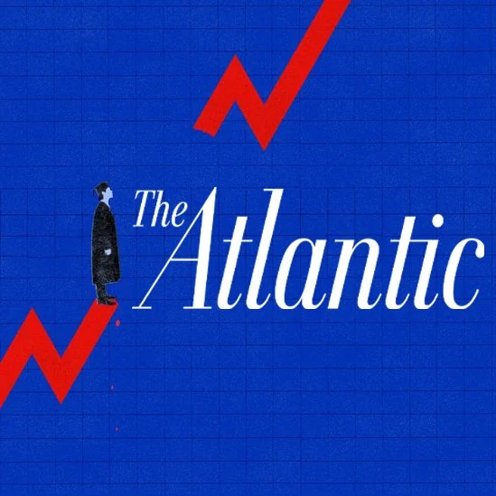
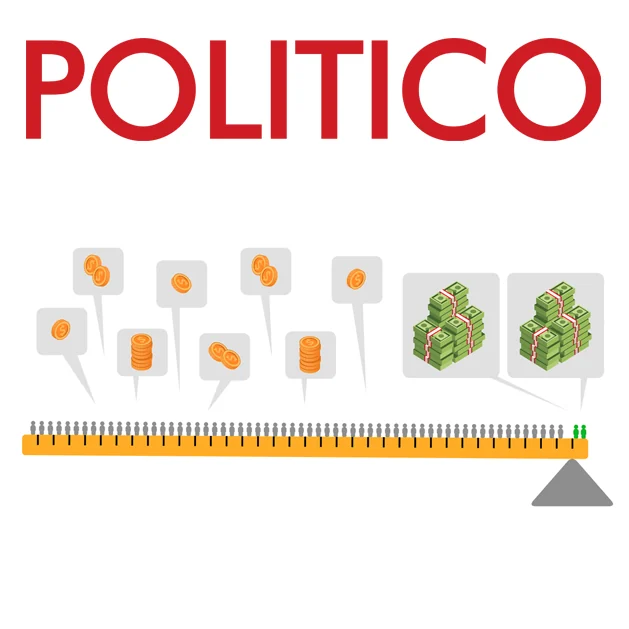

Publications
Writing on economics, power, and prosperity.
Selected essays and commentary challenging trickle-down economics and making the case for broad-based prosperity.
Books
Two bestselling arguments for a stronger democracy.
Nick is the co-author, with Eric Liu, of The True Patriot and The Gardens of Democracy.
Selected writing
Articles with a visual life of their own.
Highlights preserved from Nick’s current collection, paired with their original publication artwork.
Opinion: Which capitalism are we defending?Read article

The Middle-Out Moment Is Still HereRead article A New Economics Takes HoldRead article 7 reasons why the capital gains tax is good for Washington stateRead article
Six Ways Existing Economic Models Are Killing the EconomyRead article
Better Schools Won’t Fix AmericaRead article Progressive Labor StandardsRead article ‘Homo Economicus’ Must DieRead article
Democrats Must Reclaim the Center … by Moving Hard LeftRead article The Pitchforks Are Coming… For Us PlutocratsRead article Capitalism RedefinedRead articleComplete archive